This vignette demonstrates a modern workflow for processing Landsat Collection 2 Level-2 data from the Microsoft Planetary Computer (MPC) STAC API.
This vignette also demonstrates contemporary approaches to cloud-masking and image compositing using OmniCloudMask and the geometric median algorithm, respectively.
This example prioritizes data quality and modern processing methods over raw speed, demonstrating how to generate analysis-ready data using contemporary cloud-native workflows.
We also demonstrate a powerful new feature of vrtility:
the ability to create derived bands using
vrt_derived_block(). This feature enables you to generate
spectral indices (such as NDVI and EVI) and other derived metrics
directly within the VRT framework. Under the hood, it uses muparser expressions
executed through VRT pixel functions, providing efficient computation
without requiring intermediate file storage.
Prerequisites
GDAL muparser Support: Your GDAL installation must
include muparser support for derived band calculations. You can verify
this by running: vrtility::check_muparser(). This is
typically included in most GDAL installations, but is not yet bundled
with many binary versions of gdalraster (on Windows, macOS, etc).
Query the MPC STAC API
This example demonstrates the standard workflow for discovering and filtering satellite imagery through a STAC (SpatioTemporal Asset Catalog) API. We’ll query the MPC STAC catalog for the landsat-c2-l2 collection and apply filters to obtain the specific assets we need.
The process involves: 1. Querying the STAC collection for available imagery 2. Filtering by cloud coverage to ensure data quality 3. Applying coverage filters to guarantee sufficient spatial overlap
In this example, we’re targeting a bounding box around Copenhagen,
Denmark, and using stac_coverage_filter() to ensure we only
retrieve images with adequate coverage of our area of interest.
library(vrtility)
bbox <- gdalraster::bbox_from_wkt(
wkt = "POINT (12.56 55.67)",
extend_x = 0.3,
extend_y = 0.2
)
te <- bbox_to_projected(bbox)
trs <- attr(te, "wkt")
mpc_landsat <- stac_query(
bbox = bbox,
stac_source = "https://planetarycomputer.microsoft.com/api/stac/v1/",
collection = "landsat-c2-l2",
start_date = "2025-05-01",
end_date = "2025-07-30"
)
landsat_filter <- rstac::assets_select(
mpc_landsat,
asset_names = c("blue", "green", "red", "nir08")
) |>
stac_cloud_filter(max_cloud_cover = 20) |>
stac_coverage_filter(
bbox = bbox,
min_coverage = 0.9
)Download and warp the images
Here we virtually warp the images and then download them to disk
using multiple processes within an isolated set of mirai daemons. Note
that we call mirai::daemons() within the
with() function to ensure that the daemons are properly
cleaned up after use.
Note the use of vrt_plan() which is an alternative to
vrt_collect() that allows for deferred execution of the VRT
creation and warping steps. This simply skips the initial creation of
asset-level VRTs and therefore slightly speeds up the overall process -
if you are interested in viewing or inspecting the individual asset
VRTs, you should use vrt_collect() instead.
We then use vrt_move_band() to reorder the bands so that
the Near-Infrared (NIR) band follows the RGB bands, which is a common
convention for visualizing multispectral imagery. On occasion the
ordering of bands in the STAC assets may not align with typical
expectations.
with(mirai::daemons(10), {
landsat_chgn <- vrt_plan(
landsat_filter
) |>
vrt_warp(
t_srs = trs,
te = te,
tr = c(30, 30)
) |>
vrt_move_band(band_idx = 1, after = 4) # Move nir band to end
})
print(landsat_chgn)
#> → <VRT Collection>
#>
#> VRT SRS:
#> PROJCS["unknown",GEOGCS["unknown",DATUM["Unknown based on WGS 84 ellipsoid",SPHEROID["WGS 84",6378137,298.257223563,AUTHORITY["EPSG","7030"]]],PRIMEM["Greenwich",0],UNIT["degree",0.0174532925199433,AUTHORITY["EPSG","9122"]]],PROJECTION["Lambert_Azimuthal_Equal_Area"],PARAMETER["latitude_of_center",55.67],PARAMETER["longitude_of_center",12.56],PARAMETER["false_easting",0],PARAMETER["false_northing",0],UNIT["metre",1],AXIS["Easting",EAST],AXIS["Northing",NORTH]]
#> Bounding Box: -18973.07 -22271.98 18976.93 22308.02
#> Pixel res: 30, 30
#> Start Date: 2025-05-05 10:13:31 UTC
#> End Date: 2025-07-01 10:07:41 UTC
#> Number of Items: 6
#> Assets: blue, green, red, nir08Cloud masking
Here we generate an OmniCloudMask for each image in the VRT collection using the red, green, and NIR bands. The cloud mask identifies pixels affected by clouds, cloud shadows, and other atmospheric interference. We then apply this mask to filter out low-quality pixels and compute the results to disk.
Note that we use recollect = TRUE to return a new VRT
collection that references the newly created cloud-masked GeoTIFF files,
allowing us to continue working with the data in a virtualized format
for subsequent processing steps.
We then apply appropriate scaling to the Landsat Level-2 surface reflectance - see the USGS docs
landsat_mask <- landsat_chgn |>
vrt_create_mask(
inbands = c(red = 3, green = 2, nir = 4),
maskfun = create_omnicloudmask()
) |>
vrt_set_maskfun(
mask_band = "omnicloudmask",
mask_values = 1:3
) |>
vrt_set_scale(scale_value = 0.0000275, offset_value = -0.2)
purrr::walk(
seq_len(landsat_mask$n_items),
~ plot(landsat_mask, item = .x, c(3, 2, 1), na_col = "#ffa928")
)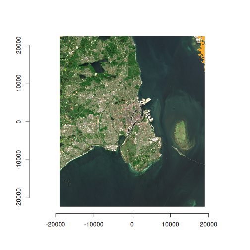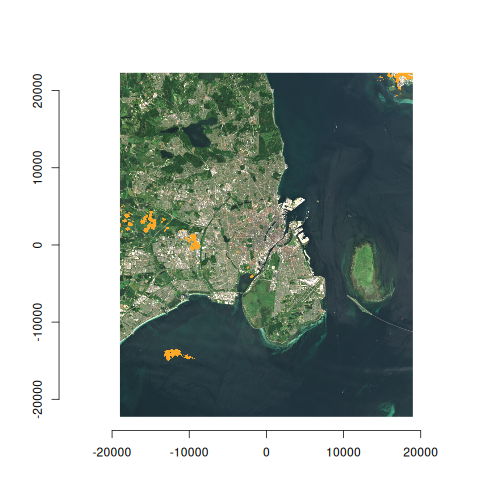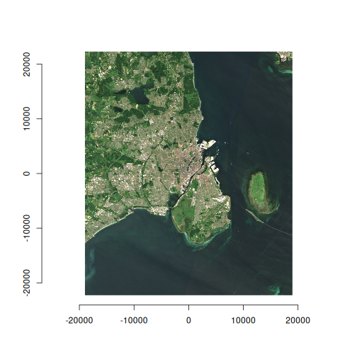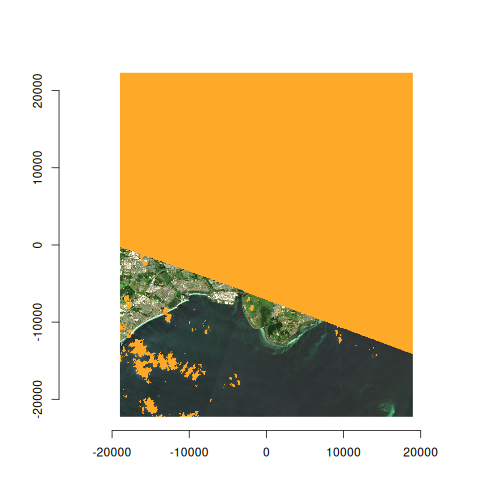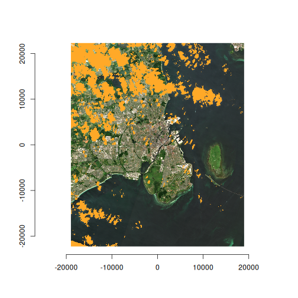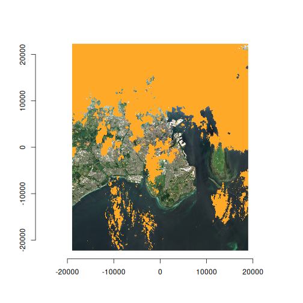
Geometric median composite
Here we generate a geometric median composite from the cloud-masked
images using multiband_reduce() with the
geomedian() function. The geometric median is a robust
statistical method that effectively reduces noise and preserves spectral
characteristics while minimizing the influence of outliers and residual
cloud contamination.
We use mirai::daemons() to parallelize the computation
across multiple cores, significantly improving processing speed for this
computationally intensive operation.
with(mirai::daemons(10), {
landsat_median <- multiband_reduce(
landsat_mask,
reduce_fun = geomedian(),
outfile = fs::file_temp(ext = ".tif"),
recollect = TRUE
)
})
plot(
landsat_median,
c(3, 2, 1),
na_col = "#ffa928"
)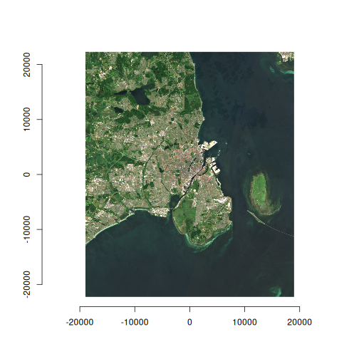
Derived bands
Spectral indices are essential tools in remote sensing for extracting meaningful information from multi-band imagery. Common indices like NDVI (Normalized Difference Vegetation Index), EVI (Enhanced Vegetation Index), and others help identify vegetation health, water content, and other surface characteristics.
The vrtility package provides
vrt_derived_block() for efficient creation of these derived
bands. This function uses R’s intuitive formula syntax to define band
calculations, which are then automatically translated to muparser
expressions and executed using VRT pixel functions. This approach
provides memory-efficient computation without requiring intermediate
file storage.
In this example, we’ll calculate several useful indices and visualize the results:
exptest <- vrt_derived_block(
landsat_median,
ndvi ~ (nir08 - red) / (nir08 + red),
ndti ~ (red - green) / (red + green),
evi2 ~ 2.5 * (nir08 - red) / (nir08 + 2.4 * red + 1),
vgnirbi ~ (green - nir08) / (green + nir08)
)
print(exptest, pixfun = TRUE)
#> → <VRT Block>
#> VRT XML: [hidden]
#> run
#> Pixel Function:
#> ndvi ~ ((nir08 * 0.0000275 + -0.2) - (red * 0.0000275 + -0.2))/((nir08 * 0.0000275 + -0.2) + (red * 0.0000275 + -0.2))
#> ndti ~ ((red * 0.0000275 + -0.2) - (green * 0.0000275 + -0.2))/((red * 0.0000275 + -0.2) + (green * 0.0000275 + -0.2))
#> evi2 ~ 2.5 * ((nir08 * 0.0000275 + -0.2) - (red * 0.0000275 + -0.2))/((nir08 * 0.0000275 + -0.2) + 2.4 * (red * 0.0000275 + -0.2) + 1)
#> vgnirbi ~ ((green * 0.0000275 + -0.2) - (nir08 * 0.0000275 + -0.2))/((green * 0.0000275 + -0.2) + (nir08 * 0.0000275 + -0.2))
#>
#>
#> VRT SRS:
#> PROJCS["unknown",GEOGCS["unknown",DATUM["Unknown based on WGS 84 ellipsoid",SPHEROID["WGS 84",6378137,298.257223563,AUTHORITY["EPSG","7030"]]],PRIMEM["Greenwich",0],UNIT["degree",0.0174532925199433,AUTHORITY["EPSG","9122"]]],PROJECTION["Lambert_Azimuthal_Equal_Area"],PARAMETER["latitude_of_center",55.67],PARAMETER["longitude_of_center",12.56],PARAMETER["false_easting",0],PARAMETER["false_northing",0],UNIT["metre",1],AXIS["Easting",EAST],AXIS["Northing",NORTH]]
#> Bounding Box: -18973.07 -22271.98 18976.93 22308.02
#> Pixel res: 30, 30
#> Assets: ndvi, ndti, evi2, vgnirbi
#> No Data Value(s): NaN, NaN, NaN, NaN
#> Date Time: 2025-06-06 10:13:37 UTC
x <- vrt_compute(
exptest,
outfile = fs::file_temp(ext = ".tif")
)
purrr::walk(
1:4,
~ plot_raster_src(
x,
band = .x,
minmax_def = if (.x == 1) c(-1, 1) else NULL,
col = grDevices::hcl.colors(10, "Inferno")
)
)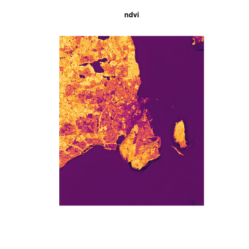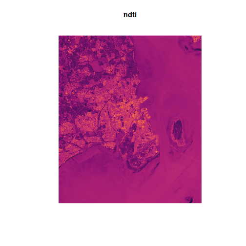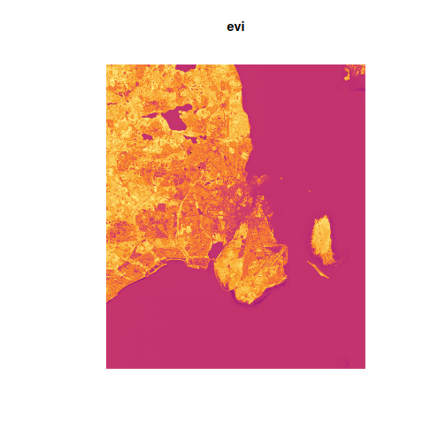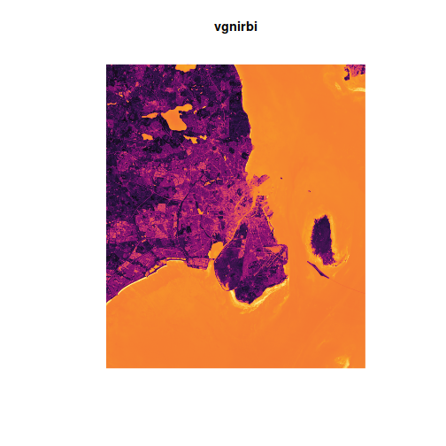